1. Login — เข้าสู่ระบบ
เปิด Browser แล้วไปที่ URL ของระบบ Timesheet จะพบหน้า Login สำหรับเข้าสู่ระบบ
ขั้นตอนการ Login
1
กรอก Email ของบริษัท เช่น yourname@central.co.th
3
กดปุ่ม Sign In หรือเลือก Sign in with Microsoft เพื่อใช้ SSO
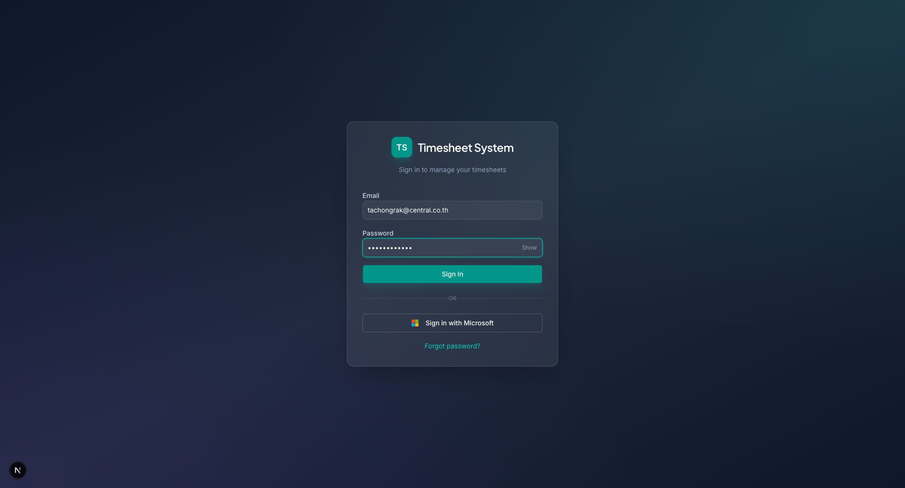
กรอก Email และ Password แล้วกด Sign In
Tip: หากลืม Password ให้กดปุ่ม "Forgot password?" ด้านล่างฟอร์ม
2. Dashboard — หน้าแรก
หลัง Login สำเร็จ จะเข้าสู่หน้า Dashboard แสดงภาพรวม Timesheet ประจำสัปดาห์และ KPI สำคัญ
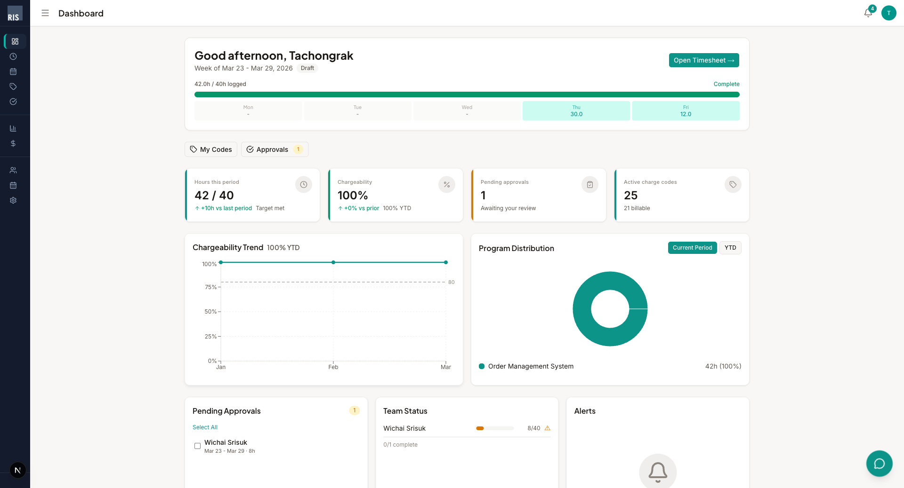
Dashboard แสดงภาพรวมทั้งหมด
ส่วนประกอบหลัก
- Weekly Summary — แถบด้านบนแสดงสัปดาห์ปัจจุบัน, ชั่วโมงที่บันทึก, สถานะ (Draft/Submitted/Approved) และ Progress bar รายวัน
- Quick Actions — ปุ่มลัด: Open Timesheet, My Codes, Approvals
- KPI Cards — 4 การ์ด: Hours this period, Chargeability %, Pending Approvals, Active Charge Codes
- Chargeability Trend — กราฟเทรนด์ Chargeability รายเดือน เทียบกับเป้า 80%
- Program Distribution — Pie chart สัดส่วนชั่วโมงแยกตาม Program
- Bottom Cards — Pending Approvals (สำหรับ Manager), Team Status, Alerts
3. Time Entry — บันทึกเวลา
หน้าหลักสำหรับบันทึกชั่วโมงการทำงานรายวัน แต่ละแถวคือ Charge Code หนึ่งรายการ แสดงเป็นตาราง 7 วัน (จันทร์–อาทิตย์)
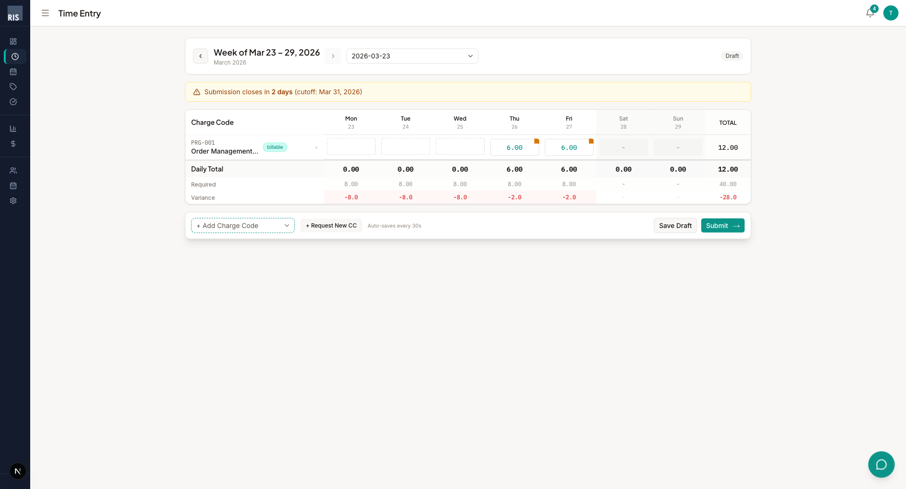
ตารางบันทึกเวลารายสัปดาห์
วิธีบันทึกชั่วโมง
1
เลือกสัปดาห์ — ใช้ลูกศร ◄ ► หรือ Date Picker ด้านบนตาราง
2
เพิ่ม Charge Code — คลิก "+ Add Charge Code" ด้านล่างตาราง แล้วเลือก Code จาก Dropdown
3
กรอกชั่วโมง — คลิกช่องของวันที่ต้องการ ใส่จำนวนชั่วโมง (เช่น 8.00) สามารถเพิ่ม Note ได้ผ่านปุ่ม "Edit note"
4
ตรวจสอบ — ดู Daily Total, Required (8 ชม./วัน) และ Variance ด้านล่าง ตัวเลขสีแดงคือชั่วโมงที่ยังขาด
5
บันทึก/ส่ง — กด Save Draft เพื่อบันทึกฉบับร่าง หรือกด Submit → เพื่อส่งให้ Manager อนุมัติ
สำคัญ: ระบบ Auto-save ทุก 30 วินาที แต่ควรกด Save Draft เพื่อความแน่ใจ สังเกต Submission Deadline (cutoff date) แถบสีส้มด้านบนตาราง
Tip: กด "+ Request New CC" หากต้องการขอ Charge Code ใหม่ที่ยังไม่มีสิทธิ์ใช้
4. Calendar & Vacation — ปฏิทินและวันลา
แสดงปฏิทินทั้งปี พร้อมสีแยกประเภท: วันหยุด (ชมพู), วันเสาร์–อาทิตย์ (เทา), วันลาของตัวเอง (ฟ้า), วันนี้ (กรอบเขียว)
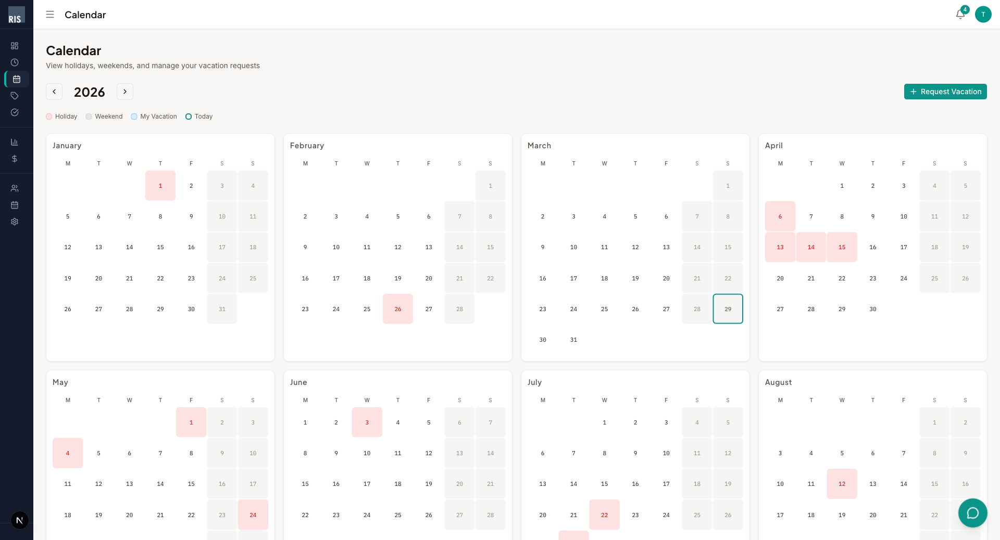
ปฏิทินแสดงวันหยุดและวันลาทั้งปี
วิธีขอลา (Request Vacation)
1
คลิกปุ่ม "+ Request Vacation" มุมขวาบน
2
เลือก วันที่เริ่ม–สิ้นสุด และ ประเภท (Full Day / Half AM / Half PM)
3
กดส่งคำขอ — รอ Manager อนุมัติ
Tip: วันลาที่อนุมัติแล้วจะแสดงเป็น Read-only ใน Time Entry ไม่ต้องกรอกชั่วโมงซ้ำ
5. Charge Codes — รหัสค่าใช้จ่าย
เรียกดู Charge Code ทั้งหมดในระบบ แบ่งเป็น 4 ระดับ: Program → Project → Activity → Task พร้อมงบประมาณของแต่ละ Code
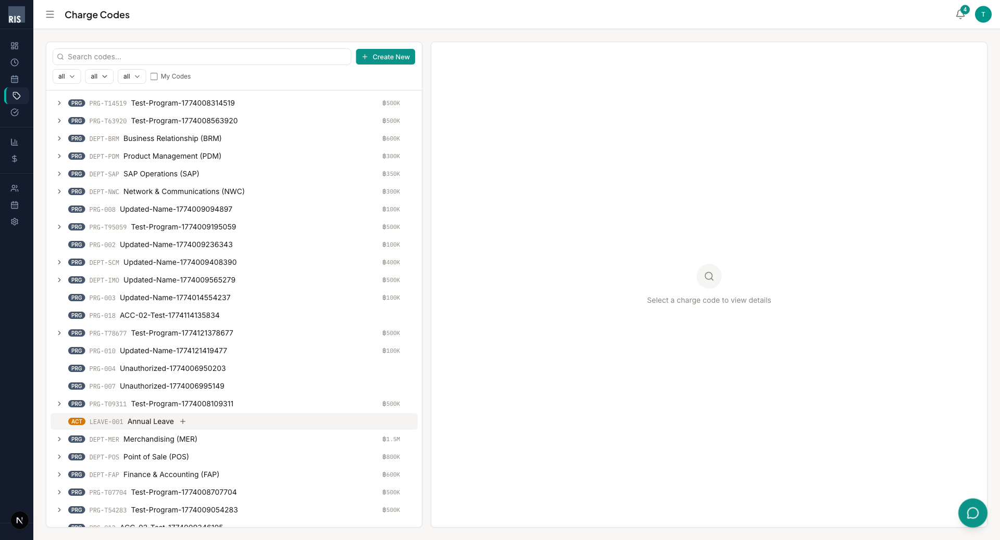
Charge Code Browser พร้อม Search และ Filter
ฟีเจอร์หลัก
- Search — พิมพ์ชื่อหรือรหัสเพื่อค้นหา
- Filter — กรองตาม Level, Category, Status
- My Codes — ติ๊กเพื่อดูเฉพาะ Code ที่ตัวเองมีสิทธิ์
- + Create New — สร้าง Charge Code ใหม่ (เฉพาะ Admin / Charge Manager)
- Detail Panel — คลิกที่ Code เพื่อดู Owner, Budget, Users ที่มีสิทธิ์ในแผงขวา
6. Approvals — การอนุมัติ Manager / Admin
สำหรับ Manager และ Admin ใช้ตรวจสอบ อนุมัติ หรือปฏิเสธ Timesheet ของทีม รวมถึงจัดการคำขอลา
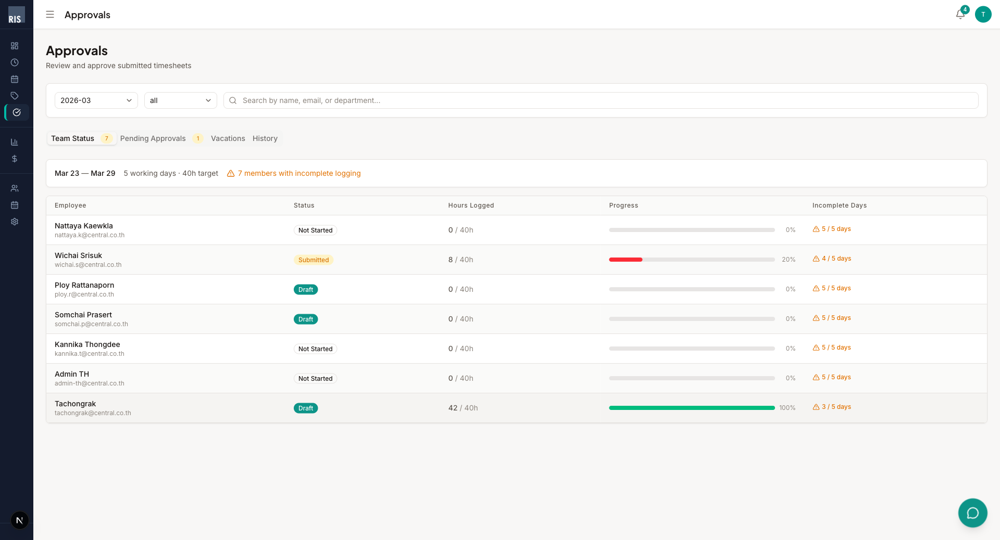
Approvals — Team Status แสดงสถานะชั่วโมงของทีม
แท็บที่มี
- Team Status — ภาพรวมชั่วโมงของทุกคนในทีม: ใครกรอกครบ ใครยังขาด (Incomplete Days แสดงสีส้ม)
- Pending Approvals — Timesheet ที่รออนุมัติ คลิกเพื่อดูรายละเอียด แล้วกด Approve หรือ Reject
- Vacations — คำขอลาจากทีมที่รออนุมัติ
- History — ประวัติการอนุมัติทั้งหมด พร้อม Timestamp และ Comment
Approval Flow
Draft
→
Submitted
→
Manager Approved
→
CC Owner Approved
→
Locked
7. Reports — รายงาน Admin / PMO / Finance
รายงานภาพรวมค่าใช้จ่าย, Utilization, Chargeability ขององค์กร สามารถ Export เป็น CSV หรือ PDF
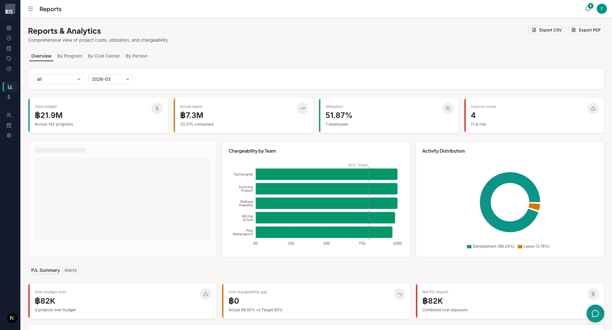
Reports Overview — KPI, Charts, P/L Summary
แท็บรายงาน
- Overview — KPI Cards (Total Budget, Actual Spent, Utilization, Overrun Count) + Chargeability by Team + Activity Distribution + P/L Summary
- By Program — รายงานแยกตาม Program
- By Cost Center — รายงานแยกตาม Cost Center
- By Person — รายงานแยกตามบุคคล
8. Budget — ติดตามงบประมาณ Admin / PMO / Finance
ติดตามงบประมาณแต่ละ Charge Code: Budget, Actual Spent, Usage %, Forecast, Variance และสถานะ
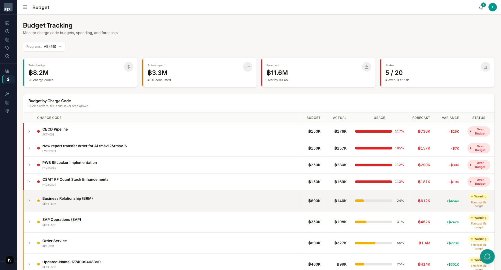
Budget Tracking — ตารางงบประมาณแยกตาม Charge Code
สถานะสี
- ● On Track — ใช้จ่ายไม่เกิน 60%
- ● Warning — ใช้จ่าย 60–80% หรือ Forecast เกินงบ
- ● Over Budget — ใช้จ่ายเกิน 80% หรือ Actual เกิน Budget
Tip: คลิกที่แถวเพื่อดู Child-level breakdown ของ Charge Code นั้นๆ
9. Notifications — การแจ้งเตือน
ศูนย์รวมการแจ้งเตือนทุกประเภท สามารถกรองตามแท็บ และกด "Mark all as read" เพื่ออ่านทั้งหมด
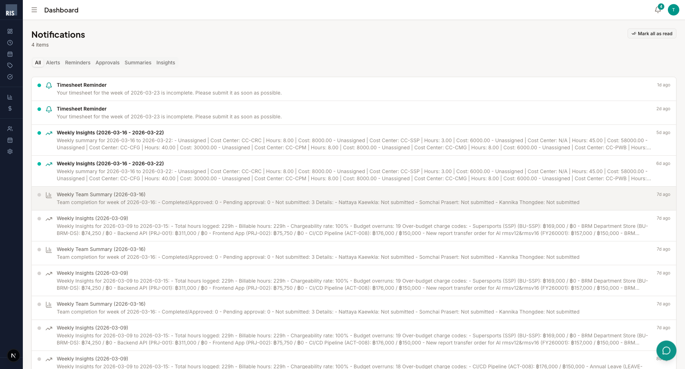
Notification Center — แจ้งเตือนทุกประเภท
ประเภทแจ้งเตือน
- Alerts — แจ้งเตือน Budget เกิน / Chargeability ต่ำ
- Reminders — เตือนให้ Submit Timesheet ก่อน Cutoff
- Approvals — แจ้งเมื่อ Timesheet ถูก Approve/Reject
- Summaries — สรุปสถานะทีมประจำสัปดาห์
- Insights — วิเคราะห์ข้อมูลรายสัปดาห์ (ชั่วโมง, Cost, Chargeability)
10. Settings — ตั้งค่า
ตั้งค่าส่วนตัว: ธีม, สกุลเงิน, การแจ้งเตือน, Timezone
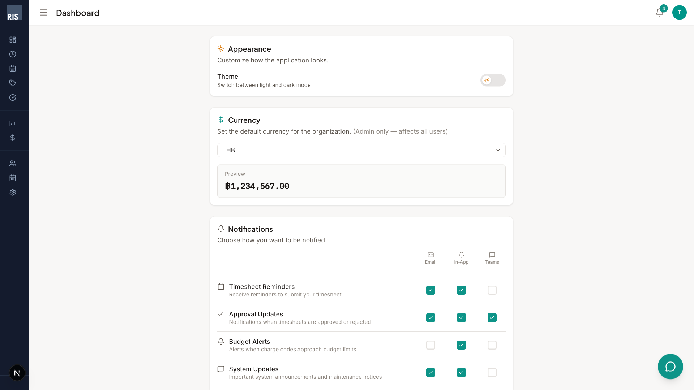
หน้าตั้งค่า — Appearance, Currency, Notifications, Timezone
- Appearance — สลับ Light/Dark Mode
- Currency — เลือกสกุลเงิน (THB, USD, EUR, JPY) — Admin เปลี่ยนได้ มีผลทั้งระบบ
- Notifications — เปิด/ปิดแจ้งเตือนแต่ละประเภท ผ่าน 3 ช่องทาง: Email, In-App, Teams
- Timezone — เลือก Timezone เช่น Asia/Bangkok
11. Admin: Users — จัดการผู้ใช้ Admin Only
จัดการผู้ใช้ในระบบ: ดูรายชื่อ, กำหนด Role, เปลี่ยน Job Grade, ค้นหาและกรองตาม Department
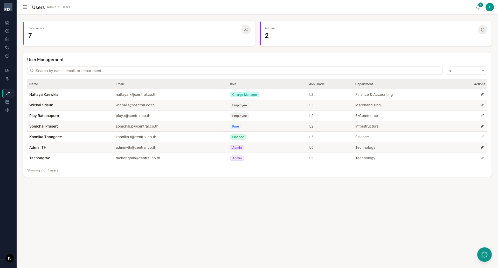
User Management — รายชื่อผู้ใช้ทั้งหมดพร้อม Role และ Department
- คลิกไอคอน ✏️ ที่คอลัมน์ Actions เพื่อแก้ไข Role หรือ Job Grade
- ค้นหาจากชื่อ, Email, หรือ Department
- กรองตาม Role ผ่าน Dropdown
12. Admin: Calendar — จัดการปฏิทิน Admin Only
จัดการวันหยุดนักขัตฤกษ์และวันหยุดสุดสัปดาห์ เลือก Country Code และปี
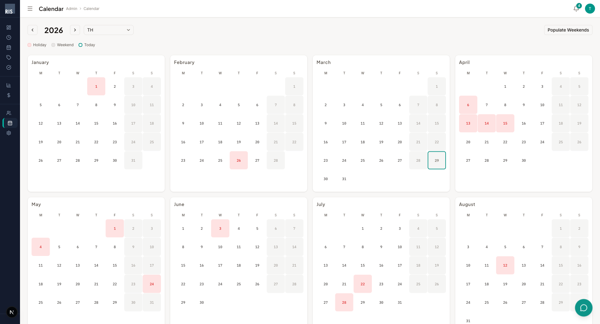
Admin Calendar — จัดการวันหยุดประจำปี
- Add Holiday — เพิ่มวันหยุดนักขัตฤกษ์ทีละวัน
- Populate Weekends — สร้างวันเสาร์–อาทิตย์อัตโนมัติทั้งปี (คลิกครั้งเดียว)
- Country Code — เลือกประเทศ (TH = ไทย) เพื่อใช้ปฏิทินที่ถูกต้อง
13. Admin: Rates — อัตราค่าใช้จ่าย Admin Only
กำหนดอัตราค่าใช้จ่ายต่อชั่วโมงตาม Job Grade ใช้สำหรับคำนวณ Budget และ Cost ในรายงาน
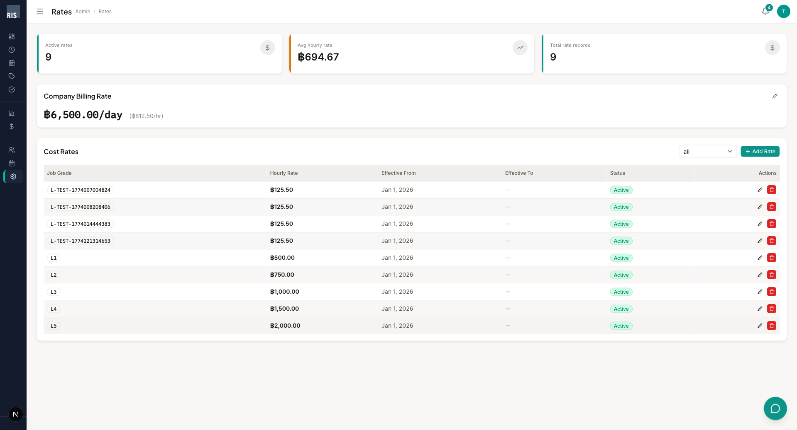
Cost Rates — อัตราค่าใช้จ่ายแยกตาม Job Grade
- Company Billing Rate — อัตราเรียกเก็บของบริษัท (ต่อวัน / ต่อชั่วโมง)
- Cost Rates — อัตราตาม Job Grade (L1–L5) พร้อมวันที่มีผล (Effective From/To)
- + Add Rate — เพิ่มอัตราใหม่
- แก้ไข/ลบ ผ่านไอคอน ✏️ / 🗑️ ที่คอลัมน์ Actions
14. Roles & Permissions — บทบาทและสิทธิ์
| Role | สิทธิ์การเข้าถึง |
|---|
| Employee |
บันทึกเวลา, ขอลา, ดู Notification, ดู Charge Code ของตัวเอง |
| Charge Manager |
ทุกอย่างของ Employee + อนุมัติ Timesheet, อนุมัติวันลา, จัดการ Charge Code, ดูสถานะทีม |
| PMO |
ดู Reports, ดู Budget, จัดการ Charge Code |
| Finance |
ดู Reports, ดู Budget |
| Admin |
เข้าถึงทุกฟีเจอร์ + จัดการ Users, Calendar, Rates, Currency |
Timesheet Workflow
บันทึกชั่วโมง
→
Save Draft
→
Submit
→
Manager Review
→
Approved / Rejected
Vacation Workflow
ส่งคำขอลา
→
Manager Review
→
อนุมัติ
→
แสดงใน Timesheet อัตโนมัติ
กำหนดเวลาสำคัญ
- Submission Cutoff — ส่ง Timesheet ภายใน 3 วันหลังสิ้นงวด
- Working Hours — เป้าหมาย 8 ชม./วัน, 40 ชม./สัปดาห์
- Chargeability Target — เป้าหมาย 80% ของชั่วโมงทำงานเป็น Billable
Timesheet System User Manual v1.0 — March 2026
RIS Company Limited (Central Group)